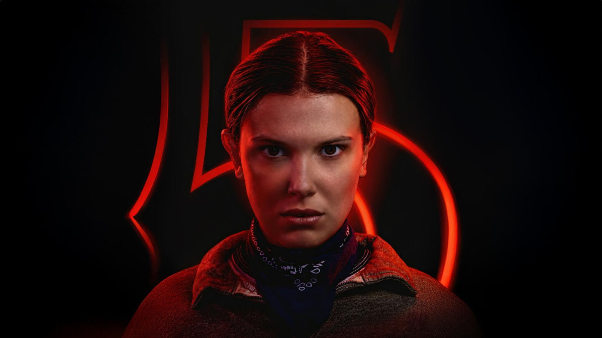
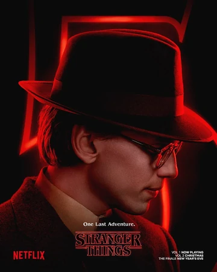
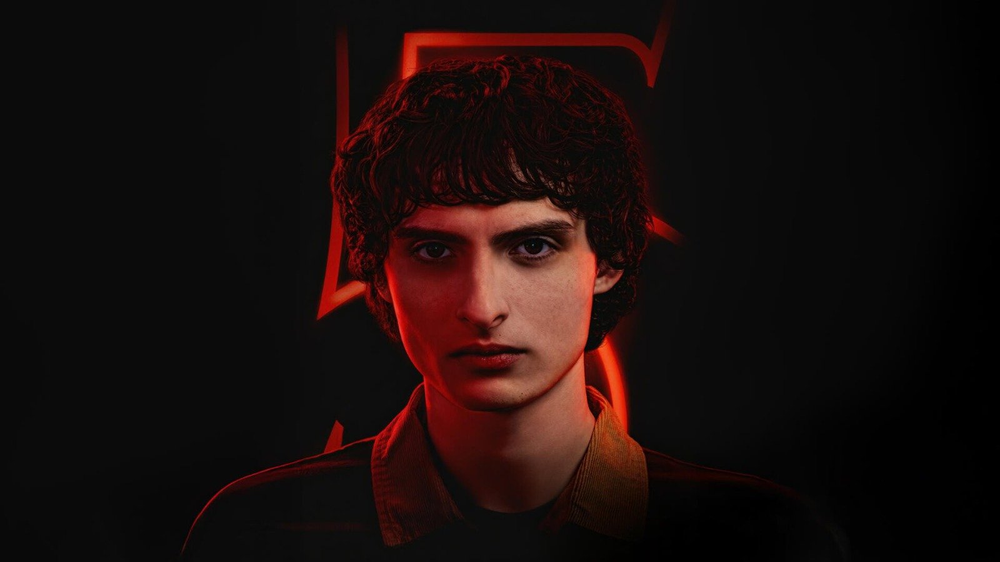
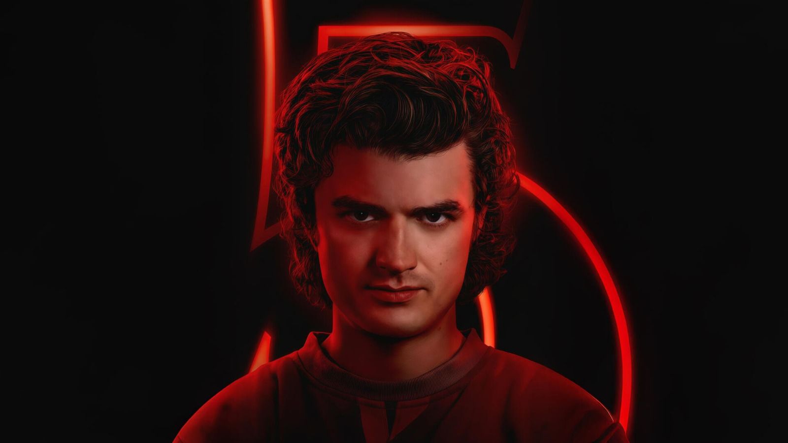
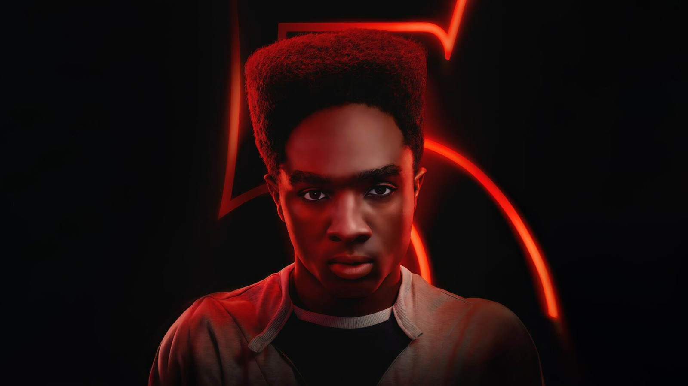
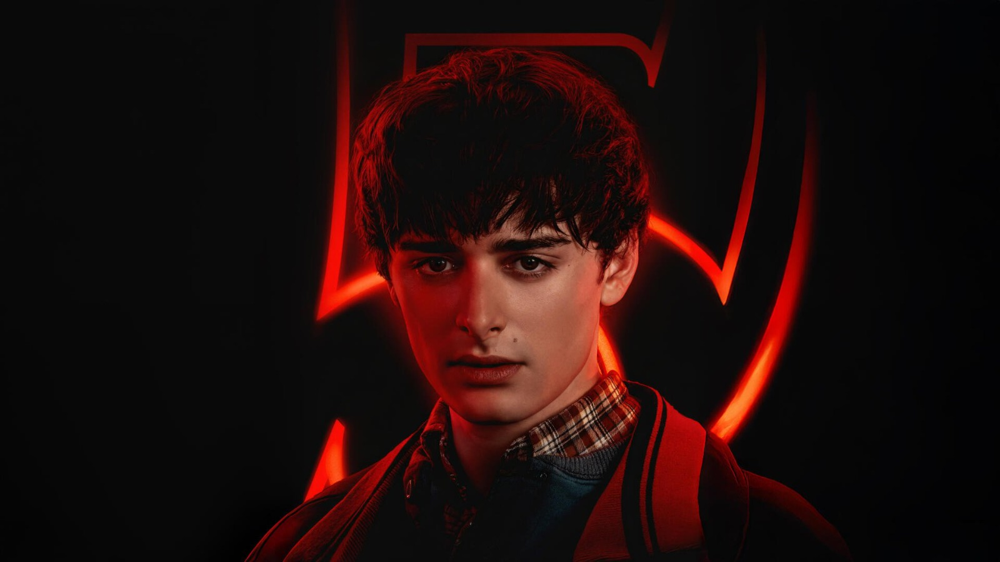
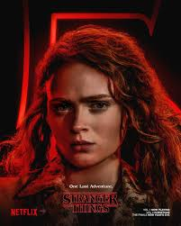
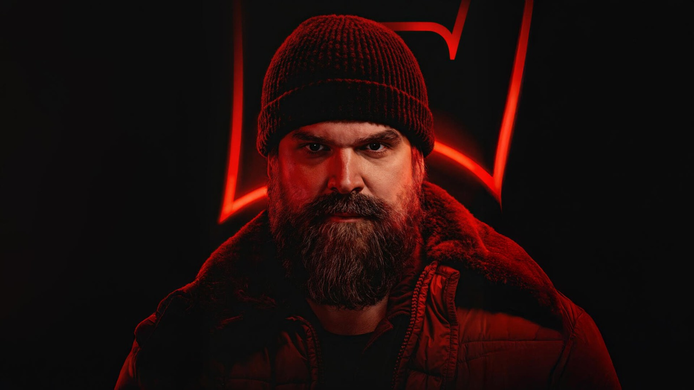
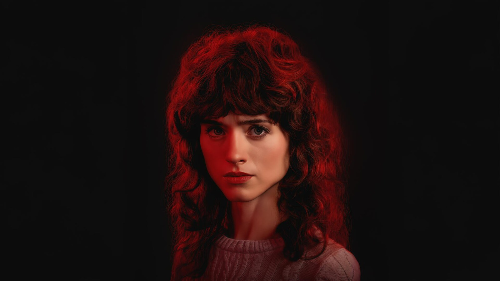
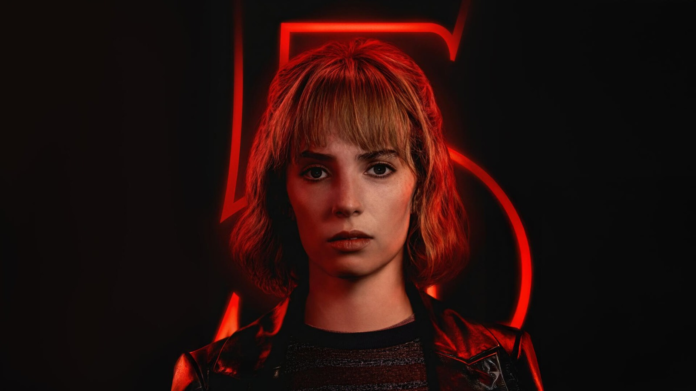

Hawkins, Indiana'ya Hoş Geldiniz. Burada tuhaf şeyler oluyor...
HİKAYE
1980'lerin klasik bilimkurgu ve korku filmlerine bir saygı duruşu niteliğinde olan Stranger Things, 1983 yılında ABD'nin Indiana eyaletindeki kurgusal Hawkins kasabasında dört yakın arkadaşın oynadığı bir oyun sonrası Will’in gizemli bir şekilde kaybolmasıyla başlar. Bu kayboluş, telekinetik güçlere sahip Eleven adında gizemli bir kızın ortaya çıkması ve kasabanın hemen altında yatan karanlık, soğuk ve canavarlarla dolu "Baş Aşağı Dünya" isimli paralel evrenin keşfedilmesiyle derinleşir.
KARAKTERLER
Buraya
tıklayarak dizinin yayınlandığı siteye gidebilirsiniz.Bizi puanlamayı unutmayın! Upside Down'da görüşürüz.
Bu site Hawkins Laboratuvarında kodlanmıştır.